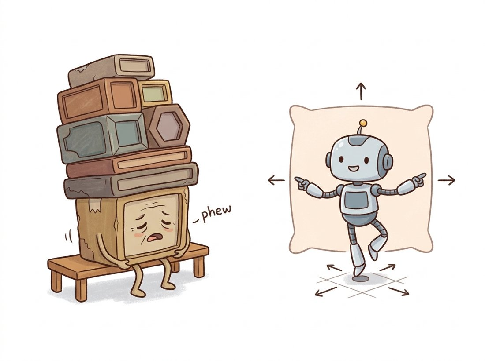

"For years they made me memorize a catalogue of rectangles before I was allowed to look at anything. Nine shapes per spot, all of them guesses about objects I had not yet seen. Then one day they said: just point at the thing and tell me how far the edges are. I have never felt so unburdened."
An Anchor Box, Finally Retired
Anchor-free detectors throw away the hand-designed catalogue of reference boxes and instead predict an object directly from the feature-map location that falls on it: regress the four distances to the box edges, or find the object's center as a peak in a heatmap. The anchor box of the previous two sections is a powerful idea but a tuning burden: its scales and aspect ratios are hyperparameters you must match to your dataset, and they introduce a complex anchor-to-ground-truth matching step. Anchor-free methods like FCOS and CenterNet remove all of that, treating each feature-map pixel as a candidate that either sits on an object (and then says how big it is) or does not. The simplification was so clean that the modern YOLO line and most 2024-era real-time detectors are anchor-free. This section builds the two main flavors, per-location regression and center-heatmap peaks, and explains the center-ness trick that makes them accurate.
The anchor box served the detectors of Section 23.2 and Section 23.3 well, but Exercise 23.2.2 exposed its hidden cost: you must choose anchor scales and aspect ratios that cover your objects, and a poor choice silently caps the best achievable IoU. Worse, anchors introduce an intricate label-assignment step (which anchor is responsible for which object?) full of IoU thresholds and sampling ratios. Around 2019 the field asked whether anchors were necessary at all, given that a feature map already tiles the image with locations. The answer, delivered by FCOS and CenterNet, was no: a location can predict an object directly. This section is about how, and about why the resulting simplicity won. The illustration below captures the shift, from a heavy catalogue of reference boxes to simply pointing at the edges.

1. FCOS: Per-Location Box Regression Intermediate
FCOS (Fully Convolutional One-Stage detector, Tian et al., 2019) makes the simplest possible anchor-free choice. For every location $(x, y)$ on an FPN feature map, it asks two questions. First, classification: does this location fall inside some ground-truth object's box, and if so, of what class? Second, regression: if it does, how far is this location from the four edges of that box? The box is encoded as four positive distances $(l, t, r, b)$, the distances from the location to the left, top, right, and bottom edges. Decoding is trivial: for a location at $(x, y)$ the predicted box corners are $(x - l, y - t, x + r, y + b)$. There are no anchors, no aspect ratios, and no IoU-based anchor matching; a location is a positive training example simply if it lands inside a ground-truth box.
Two complications need handling. A location near the boundary of two overlapping objects could fall inside both; FCOS resolves this with the FPN, assigning each object size to a specific pyramid level so that conflicting boxes rarely land on the same level. The decode logic is so simple it fits in a few lines, shown below for one feature-map level.
# FCOS decode: turn a feature-map location plus its four predicted edge
# distances (left, top, right, bottom) into a corner-format box.
# No reference anchors and no exponential, just subtract and add the distances.
import torch
def fcos_decode(locations, ltrb):
"""locations: (N, 2) pixel coords of feature-map points.
ltrb: (N, 4) predicted distances to left, top, right, bottom edges.
Returns (N, 4) corner-format boxes."""
x, y = locations[:, 0], locations[:, 1]
l, t, r, b = ltrb[:, 0], ltrb[:, 1], ltrb[:, 2], ltrb[:, 3]
x1 = x - l
y1 = y - t
x2 = x + r
y2 = y + b
return torch.stack([x1, y1, x2, y2], dim=1)
locs = torch.tensor([[250.0, 150.0]])
ltrb = torch.tensor([[126.0, 86.0, 146.0, 76.0]]) # distances from the figure
print(fcos_decode(locs, ltrb)) # [[124., 64., 396., 226.]] recovers the GT box
fcos_decode, mapping a location and its four ltrb edge distances to corner coordinates. Compare the output to Figure 23.4.1's box: subtracting l, t and adding r, b reconstructs the corners directly, with no anchor transform and no exponential needed.2. The Center-ness Trick Advanced
A subtle problem appears: locations near the edge of an object regress long, lopsided distances and produce sloppy boxes, yet during training they are treated as fully positive examples, so the model emits many low-quality boxes from off-center locations. FCOS fixes this with a third output, a center-ness score that the network predicts at each location and that measures how centered the location is within its object. Center-ness is defined from the regression targets as
This is $1$ at the exact center of the box (where $l = r$ and $t = b$) and decays toward $0$ near the edges. At inference, the final box score is the classification score multiplied by the center-ness. A confidently-classified box from a corner location therefore has high class score but low center-ness, so its combined score is low. That pushes the off-center boxes down the ranking, and NMS keeps the well-centered, well-localized ones. Center-ness is a small branch with an outsized effect; it is the anchor-free analogue of the objectness score, and it is why FCOS matched anchor-based RetinaNet despite its radical simplification.
The deepest lesson of the anchor-free turn is that anchors were never really about the box shapes; they were about label assignment, the rule that decides which predictions are responsible for which ground-truth objects during training. Anchor-based methods assign by IoU between anchors and objects; FCOS assigns by whether a location falls inside an object plus the FPN-level rule; CenterNet assigns only the single center location. The frontier of detection in the 2020s is precisely better assignment: methods like ATSS (adaptive training sample selection), OTA (optimal transport assignment), and the task-aligned assignment in YOLOv8 all keep the anchor-free box encoding but make the assignment dynamic and learned rather than fixed. When you read that a detector uses "SimOTA" or "TAL", that is the label-assignment rule, and it matters more to final accuracy than whether anchors are present.
3. CenterNet: Objects as Heatmap Peaks Advanced
CenterNet (Zhou et al., 2019, "Objects as Points") takes anchor-free thinking to its logical conclusion: represent each object by a single point, its center, and detect objects as peaks in a class-specific heatmap. The network outputs, for each class, a low-resolution heatmap whose value at a pixel is high where that class's object center is. Training renders each ground-truth center as a Gaussian blob on the heatmap (the same Gaussian kernel you met in the spatial filtering of Chapter 3) and regresses the network output toward it with a focal-style loss. Separate regression maps predict, at each center pixel, the object's width and height and a small offset that recovers the precision lost to the heatmap's downsampling. At inference, you simply take the local maxima of each heatmap (a $3 \times 3$ max-pool finds peaks), read off the size and offset at each peak, and you have your boxes, with no NMS at all, because a peak-picking heatmap inherently produces one detection per object.
This framing is elegant and influential beyond box detection: the same heatmap-of-keypoints idea is how human pose estimation localizes joints (each joint is a keypoint peak), and CenterNet itself extends naturally to predicting any set of points per object. It connects detection to the keypoint and descriptor ideas of Chapter 10, where you found interest points as extrema of a response map; CenterNet learns the response map end-to-end and makes its peaks the object centers. Figure 23.4.2 contrasts the three detection paradigms of this chapter at the level of what each predicts per location.
torchvision ships FCOS with COCO weights, so the anchor-free detector is the same one-line load as the anchor-based ones, and you get the center-ness branch and FPN for free:
# Load a COCO-pretrained anchor-free FCOS detector and run inference.
# The center-ness branch, per-location regression, and FPN-level size
# assignment all live inside the single constructor.
import torch
from torchvision.models.detection import fcos_resnet50_fpn, FCOS_ResNet50_FPN_Weights
weights = FCOS_ResNet50_FPN_Weights.DEFAULT
model = fcos_resnet50_fpn(weights=weights).eval()
with torch.no_grad():
out = model([torch.rand(3, 800, 800)])[0] # boxes, labels, scores
keep = out["scores"] > 0.5
print(out["boxes"][keep].shape)
fcos_resnet50_fpn call, hiding the per-location decode that Code Fragment 1 spelled out. The library bundles the center-ness branch, per-location regression, the FPN-level size assignment, and the inference NMS, sparing you the few hundred lines where the level-assignment rule is easy to get subtly wrong, and it matches the published mAP exactly.The FCOS head, its center-ness branch, the per-location regression, the FPN-level size assignment, and the inference-time NMS are all inside the one constructor. Compared with hand-implementing the per-location assignment, center-ness computation, and decode (a few hundred lines, and easy to get the level-assignment rule subtly wrong), this is a single import that matches the published mAP exactly.
Who: a logistics company detecting shipping labels and barcodes on parcels moving down a conveyor, 2023. Situation: their objects had extreme and varied aspect ratios, long thin barcodes, wide flat address labels, and they started with an anchor-based detector using the default COCO anchor shapes. Problem: the default anchors (tuned for COCO's people, cars, and animals) never reached a high IoU with the long thin barcodes, so the best achievable recall was capped no matter how long they trained, exactly the anchor-coverage failure of Exercise 23.2.2. They spent weeks hand-tuning anchor scales and ratios with marginal gains. Decision: they switched to an anchor-free FCOS-style detector, which has no aspect-ratio assumptions at all and regresses the four edge distances directly. Result: recall on the thin barcodes jumped immediately with no anchor tuning, and the team deleted the entire anchor-configuration code path. Lesson: when your objects' shapes fall outside the comfortable range of standard anchors (very thin, very wide, or a wide mix), the anchor-free encoding is not just simpler, it removes a hard ceiling that anchor tuning can only nibble at.
The anchor-free turn that FCOS and CenterNet started has effectively won the real-time end of detection. YOLOv8 (2023) and YOLO11 (2024) are anchor-free with a decoupled head, dynamic task-aligned label assignment, and a distribution-focal box regression that predicts a distribution over edge distances rather than a point estimate, sharpening localization. The 2024 to 2025 research conversation has moved almost entirely off anchors and onto label-assignment quality (ATSS, OTA, SimOTA, TOOD) and onto removing NMS: YOLOv10 (2024) uses a dual one-to-one and one-to-many assignment so it needs no NMS at inference, getting the NMS-free benefit of DETR without a transformer. The hand-tuned anchor box, which dominated detection from 2015 to 2019, is now mostly a teaching example and a legacy-config concern, exactly the trajectory this section traces.
CenterNet's paper title, "Objects as Points", is almost a manifesto, and its central claim, that you can detect an object by finding one pixel, is deceptively radical given that the entire field had spent years drawing increasingly clever rectangles. The same one-point-per-object idea, with extra regressed points, immediately gave state-of-the-art human pose estimation, 3D bounding boxes, and even multi-object tracking, all from the modest observation that a thing has a center and a center is easy to find as a peak. Sometimes the simplest representation is the one nobody tried because it seemed too simple to work.
4. Why the Simplification Mattered Advanced
Anchor-free detection removed three sources of friction at once. It deleted the anchor hyperparameters (scales, ratios, counts) that had to be re-tuned per dataset. It deleted the anchor-to-ground-truth IoU matching step and its thresholds. And it reduced the number of predictions per location, which lightens the head and speeds inference. The accuracy turned out to be at least as good once center-ness or a good label-assignment rule replaced the role anchors had played in deciding which predictions to trust. The net effect is a cleaner, more portable detector that adapts to new object-shape distributions without engineering, which is why the family became the foundation of the modern real-time YOLOs.
But notice what every detector in this chapter so far still shares: they all emit many overlapping candidate boxes and rely on a hand-designed NMS to clean up duplicates (CenterNet's peak-picking is the partial exception). NMS is a non-differentiable, separately-tuned post-process that sits outside the network and can merge or split genuine objects in crowded scenes. The next section presents DETR, which removes NMS entirely by training the network to predict a clean set in the first place, using the transformer you built in Chapter 22 and a matching loss that makes duplicate suppression part of learning rather than a postscript.
FCOS treats every location inside an object as a positive example, yet multiplies the final score by center-ness at inference. In two or three sentences, explain what would go wrong at inference if you dropped the center-ness branch and ranked boxes by classification score alone, and why a box predicted from a corner location tends to be poorly localized. Relate your answer to which boxes NMS would then keep.
Implement CenterNet-style peak extraction: given a single-channel heatmap tensor, find the local maxima by comparing it to its $3 \times 3$ max-pooled version (a pixel is a peak where it equals the pooled value) and keeping the top-k peaks above a threshold. Test it on a synthetic heatmap with three Gaussian blobs at known centers and confirm you recover exactly three peaks at the right locations. Explain in one sentence why this peak-picking makes a separate NMS step unnecessary for CenterNet.
Construct a small synthetic dataset of very thin horizontal bars (aspect ratio 10:1) on noise backgrounds, with known ground-truth boxes. Compute, for a standard COCO anchor set (three scales, aspect ratios 0.5, 1, 2), the best IoU any anchor achieves against a typical bar, and compare it to the IoU an FCOS-style per-location regression could in principle achieve (which is unbounded, since it regresses exact distances). Write a short analysis explaining why the logistics company in subsection 3 hit an accuracy ceiling with anchors and how the anchor-free encoding removed it.